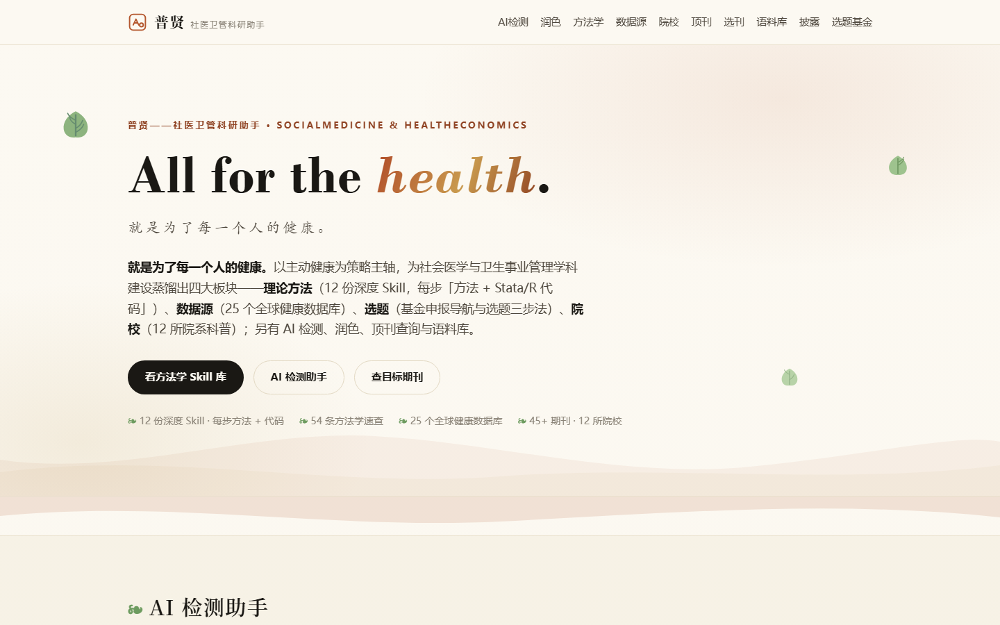
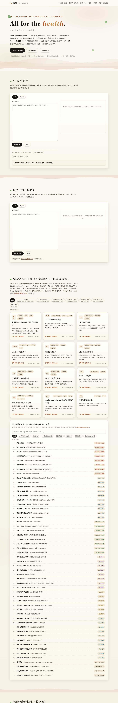

面向社会医学与卫生事业管理 / 卫生经济学研究者的开源科研工作台。像海浪一样温柔：把方法学、数据、选题与院校蒸馏成四大板块，配齐 AI 检测、润色、顶刊查询与语料库——为社会医学与卫生事业管理学科的建设与发展而做。免费开源，文本只在本机处理。
| 总纲旗舰 | 主动健康与健康融入万策（HiAP）：健康影响评估、五大板块总纲 |
| 卫生经济 | 评价教程（CEA/CUA）· DCE 设计助手 · Markov 模型助手 |
| 政策评估 | DID 双重差分 · ITS 间断时间序列 · DDD 三重差分 |
| 数据预测 | 机器学习助手（LASSO / 随机森林 / XGBoost / SHAP） |
| 统计综合 | Meta 分析助手 · socialmedicineskills 54 条速查手册 |
| 定性与结构 | 扎根理论 / SEM / 多层 SEM / fsQCA 专题 |
| 写作 | 学术写作规范润色（不做检测器规避） |
六大产品分组：卫生经济学方法 health economics skills · 社医理论与定性 medicine theory skills · 政策评估与因果 · 数据科学与预测 · 统计与研究设计 · 写作与润色。每个 Skill 能完成的事不同，按需取用。
6 项指标启发式打分：句长变异系数、套话密度、破折号密度、句首重复率、用词多样性、冒号密度，每一项「你的值 / 参考区间 / 得分」可复核；中英双语、本地处理。润色独立为写作质量模块：标点规范、去冗余、长句提示。
45+ 期刊（含中文核心）按方向筛选；20 本旗舰与友好期刊的「定位—契合选题—投稿提示」介绍。
ScienceNature MedicineThe LancetJAMA Health ForumHealth AffairsSSMNature CommunicationsHealth Economicsnpj Digital MedicineBMC Public HealthInt J Equity HealthIJHPM
《中国社会科学》《管理世界》《社会科学》100 篇中英对照题录与摘要，一键送入工作台；按工具、环节、参与程度生成中 / English 披露草稿。

△ 首页首屏：All for the health · 四大板块 · 绿叶海浪主题

△ 整页：方法学 Skill 库 · 数据源 · 院校 · 顶刊 · 选刊 · 披露
说明：截图来自真实页面；公众号发布时请单独上传图片。影响因子与分区每年更新，页面不列数值；方法学教程供研究参考，结论由研究者负责。
把健康融入万策，把健康带到每一个人心中。
中文引用：杜思娴. 普贤——社医卫管科研助手 [EB/OL]. (2026). https://naturedu.github.io/socialmedicine/.
进入普贤科研工作台 →